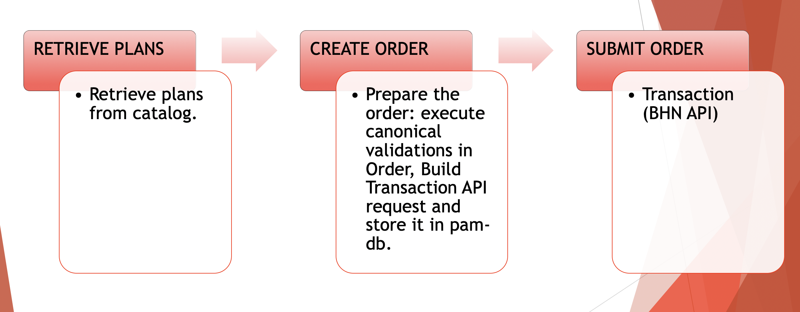

Demo
CONTEXT
- New prepaid feature “Top Ups” has become part of Target priorities. Top ups will be used for adding minutes to a phone or creating a virtual account with a redemption code. In order to handle Top Ups for prepaid purposes a canonical flow has to be implemented.
MAIN TOPICS
TOP UPS PAM MODULARIZATION IMPLEMENTATION:
- Retrieve Plans
- Create Order
- Submit Order
TOP-UPS CANONICAL FLOW:

WHAT WE DID
- We implemented the topUp module using the new repository "item_services_integrations_prepaid_topups_v1" created by Quartet team.
- We created the following canonicals workflows supporting happy and error paths:
- Functional testing using Postman